115 年國中教育會考自然試題與答案
這一頁是民國 115 年國中教育會考自然的整份歷屆試題，共 50 題，題目與標準答案出自心測中心 會考歷屆試題（依著作權法 §9，考試試題不受著作權保護），其中 50 題附有詳解。以下逐題列出題幹、選項與答案；要計時作答或記錄成績，請用線上練習。
線上作答這一科 →
全部 50 題
第 1 題
小翔將上皿天平靜置於水平桌面上，發現天平的指針靜止時偏向左邊，便進行歸零的動作。已知天平歸零後，指針靜止時指在中央的刻度上，則小翔所作的歸零動作最可能為下列何者？
- （A）將左邊的校準螺絲向內旋入
- （B）將兩端的校準螺絲均向內旋緊
- （C）在左邊的秤盤上放上一張秤量紙
- （D）使用砝碼夾將指針撥往中央的刻度
答案：（A）
詳解與考點
正解：「指針靜止時偏向左邊」，代表橫樑左端偏重。歸零要用兩端的校準螺絲改變配重位置：把左邊螺絲向內旋入，該側配重內移、力臂縮短，左端力矩減小，指針就回到中央刻度，故 A 為正解。
B：兩端螺絲同時向內旋入，左右力矩一起減小，原本左重右輕的差距並未改變，指針仍偏左。
C：在左盤放秤量紙會讓左端更重，偏向反而加劇；且歸零必須在空盤狀態下完成，秤量紙是秤量階段的措施。
D：用砝碼夾撥動指針只是移動指示器，橫樑的重量分布沒變，放手後指針仍會偏回左邊。
本題考點：上皿天平歸零——空盤靜置後以兩端校準螺絲調整橫樑左右力矩，使指針停在中央刻度；判準——哪一端偏重就把哪一端的螺絲向內旋入以縮短該側力臂；秤量紙、砝碼、手撥指針都不是歸零手段。
第 2 題
下列為某種物質的介紹：早在史前時代，人們就透過採礦、冶煉等過程，獲取「它」用以製造器具等，對於早期人類文明的進步影響深遠。在自然界，它多數是和其他元素結合，而以化合物的形式存在。它具有良好的導電性、導熱性和延展性，可拉成細絲，製成很薄的箔片，因此電線、通訊電纜等多以它為原料。上述中的「它」應屬於下列何種物質？
- （A）化合物
- （B）聚合物
- （C）金屬元素
- （D）非金屬元素
答案：（C）
詳解與考點
正解：題幹的「良好導電性、導熱性和延展性」，以及可拉成細絲、製成薄箔，是判斷金屬元素的關鍵。金屬元素如銅可作為電線與通訊電纜原料，且在自然界多與其他元素結合成化合物存在，所以 C 為正解。
A：化合物由不同元素組成；題幹的「它」本身是可與其他元素結合的元素，不是化合物。
B：聚合物多為大分子物質，通常不具金屬的良好導電性與延展性。
D：非金屬元素通常導電性較差，也通常不能拉成細絲或壓成薄箔。它看起來可能合理，是因為非金屬也能與其他元素形成化合物，但不符合題幹列出的金屬性質。
本題考點：金屬元素性質——以導電、導熱、延展性及可拉成細絲、壓成薄箔判斷；物質分類——元素可在自然界以化合物形式存在，但元素本身不等於化合物。
第 3 題
鈍氣又稱惰性氣體，是指氦(He)、氖(Ne)、氬(Ar)等元素，位於週期表中的第18族，這些元素具有下列何種性質？
- （A）熔點均高於室溫
- （B）有相似的化學性質
- （C）有相似的物理性質
- （D）均由雙原子所組成
答案：（B）
詳解與考點
正解：He、Ne、Ar 位於週期表同一族。三者同屬第 18 族鈍氣，最外層電子組態相似，化學活性都很低、不易反應，因此具有相似的化學性質，故 B 為正解。
A：鈍氣的熔點極低，多數遠低於室溫，錯誤。
C：同族元素的物理性質如熔沸點、密度會隨原子序遞增而漸變，並非彼此相似，錯誤。
D：鈍氣通常以單原子形式存在，不是雙原子分子，錯誤。
本題考點：週期表同族元素——最外層電子組態相似，因此化學性質常相近；鈍氣判準——化學活性低，通常以單原子形式存在。
第 4 題
敏敏針對某段海岸線進行研究，他將不同時期的海岸線套疊在2018年的海岸線圖上，如圖(一)。根據圖中資訊，可呈現出下列何項事實？
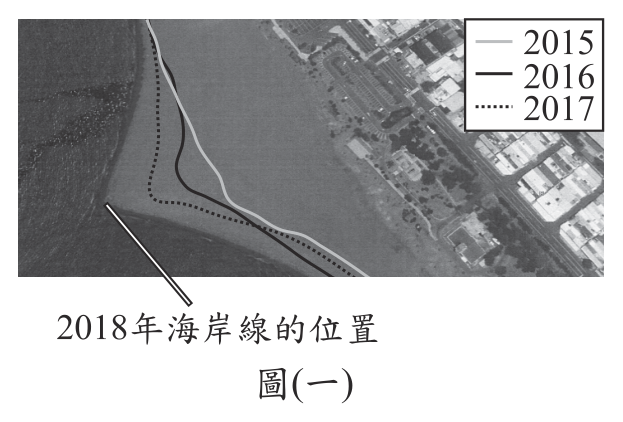
- （A）2015至2016年，此段海岸線大致往陸地方向退縮
- （B）2017至2018年，此段海岸線大致往海的方向擴張
- （C）從2015年開始，海岸線的沉積與侵蝕速率大致相等
- （D）從2015年開始，對海岸線的侵蝕作用比沉積作用大
答案：（B）
詳解與考點
正解：「套疊在2018年的海岸線圖上」，判讀時先認出圖左側深色處為海、右側為陸，再比較各年線條離海的遠近。圖中由陸向海依序是2015年灰線、2016年黑線、2017年虛線，而2018年的實際海陸交界（白線所指）又在虛線更外側，代表2017至2018年這段海岸線往海的方向前移，即擴張，故 B 為正解。
A：2016年黑線位在2015年灰線的靠海側，這段期間海岸線是往海推進，而不是往陸地方向退縮。
C：若沉積與侵蝕速率大致相等，各年線條應大致重合；圖中線條逐年往海側位移，兩者並不相等。
D：線條逐年往海推進代表泥沙持續堆積，是沉積作用大於侵蝕作用，與敘述相反。
本題考點：海岸線變遷判讀——先辨認圖中何側為海、何側為陸，再依年份排出線條的先後位置；判準——線往海側移動＝堆積（海岸擴張），往陸側移動＝侵蝕（海岸退縮）；套疊圖必須逐年相鄰比較，不能只看單一年份或首尾兩年。
第 5 題
如圖(二)，在水平地面上畫上正方形的方格，平面鏡與牆壁互相垂直，且均豎立於地面上。若持雷射筆在方格上S 點或T 點，令雷射光沿著水平面分別照射平面鏡上的P、Q、R三點，則以下列何種方式照射，其反射的雷射光不會照射到牆壁上？
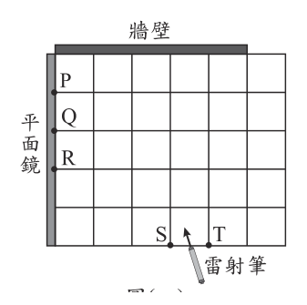
- （A）S → Q
- （B）S → P
- （C）T → R
- （D）T → P
答案：（C）
詳解與考點
正解：平面鏡反射遵守入射角等於反射角，且要比較反射光先碰到上方牆壁還是先射出右側邊界。鏡面為鉛直方向，反射時光線的左右方向改變、向上的分量保留。T→R 的入射光較平，反射後雖朝右上方前進，但上升太慢，尚未到達上方牆壁就先從右側邊界射出，因此不會照到牆壁，故 C 為正解。
A：S→Q 的入射光較陡，反射後上升夠快，會先照到上方牆壁，錯誤。
B：S→P 的反射光同樣會在抵達右側邊界前照到上方牆壁，錯誤。
D：T→P 的入射光較陡，反射後會先照到上方牆壁，錯誤。
本題考點：平面鏡反射——入射角＝反射角；方格作圖判準——沿反射方向比較光線到達牆壁與右側邊界的先後，先出界者不會照到牆壁。
第 6 題
圖(三)比較了斑馬魚幼魚與其構造和病毒的大小。圖(四)為透過顯微鏡觀察斑馬魚幼魚時的畫面。根據圖中資訊，推測灰色斑塊最可能為下列何者？圖(三) 圖(四)
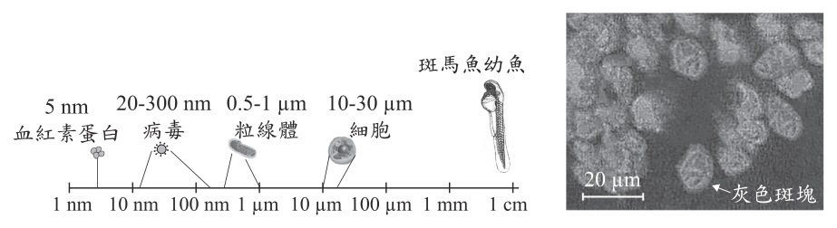
- （A）一個血紅素蛋白
- （B）一個病毒
- （C）一個粒線體
- （D）一個細胞
答案：（D）
詳解與考點
正解：用圖中的比例尺比較灰色斑塊與各構造的尺度。圖三標示血紅素約 5 nm、病毒 20–300 nm、粒線體 0.5–1 µm、細胞 10–30 µm；圖四比例尺為 20 µm，灰色斑塊大小與此相當，落在 10 µm 以上，最符合細胞尺度，故 D 為正解。
A：血紅素約 5 nm，比灰色斑塊小非常多，錯誤。
B：病毒僅 20–300 nm，也遠小於 20 µm 比例尺下的斑塊，錯誤。
C：粒線體約 0.5–1 µm，仍比斑塊小得多，錯誤。
本題考點：比例尺判讀——先將影像中物體大小與比例尺比較；生物構造尺度——血紅素與病毒為奈米尺度，粒線體為微米尺度，細胞常為 10–30 µm。
第 7 題
將燈泡、毫安培計、電池等電路元件連接成如圖(五) 所示的電路裝置，已知毫安培計A1、A2的讀數分別為500 mA、300 mA，則毫安培計A3的讀數最接近下列何者？
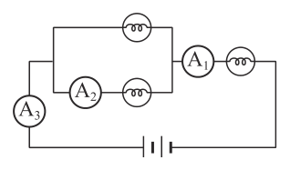
- （A）200 mA
- （B）500 mA
- （C）800 mA
- （D）1000 mA
答案：（B）
詳解與考點
正解：並聯支路匯流後的主幹電流，須用節點電流守恆判斷。A1 讀數為 500 mA，A2 所在支路為 300 mA，所以另一支路電流＝500 mA-300 mA=200 mA。A3 與 A1 都在未分流的主幹線上，因此 A3=A1=500 mA，故 B 為正解。
A：200 mA 是另一條並聯支路的電流，不是 A3 的讀數，錯誤。
C：800 mA 是把主幹的 500 mA 與其中一支路的 300 mA 重複相加，錯誤。
D：1000 mA 是將主幹電流憑空加倍，錯誤。
本題考點：並聯電路——匯流點的主幹電流＝各支路電流和；串聯部分判準——同一未分流主幹線上的電流相等。
第 8 題
以下為裝設在學校的地震預警系統，預警流程簡述： 1. 地震發生後，設置在學校的地震儀接收到訊號。 2. 估算出學校可能的震度，判斷是否發送警報。 3. 在劇烈搖晃前，學校的跑馬燈警示強度幾級的震波將在幾秒後到達。某次地震發生後，某學校跑馬燈的警示如圖(六)。根據上述資訊，我們可以得知下列何者？
- （A）地震波到達後，會使學校持續搖晃13秒
- （B）地震波到達後，會使各縣市都有震度4級的搖晃
- （C）在劇烈搖晃前，大約有13秒的時間可以避難
- （D）在劇烈搖晃前，可得知此地震釋放的能量為規模4
答案：（C）
詳解與考點
正解：跑馬燈警示「可能震度為 4 級，到達時間約 13 秒後」。這表示劇烈搖晃前約有 13 秒可採取避難行動，故 C 為正解。
A：13 秒是震波抵達前的預警時間，不是學校持續搖晃的時間，錯誤。
B：預警是該校所在地的可能震度，各縣市的震度不必相同，錯誤。
D：震度 4 級描述該地搖晃程度，不是地震釋放能量的規模 4，錯誤。
本題考點：地震預警判讀——到達時間是劇烈搖晃前的可應變時間；震度與規模——震度表示某地搖晃程度，規模表示地震釋放能量，兩者不可混用。
第 9 題
在冬季轉換為春季且濕度大的時候，若室內的溫度比室外低，空氣吹入室內很容易在磁磚牆面形成水珠，此現象稱為返潮。關於上述空氣吹入室內在磁磚牆面形成水珠的說明，下列何者最合理？
- （A）空氣內的水分遇到較高溫的牆面凝結而形成
- （B）空氣內的水分遇到較高溫的牆面汽化而形成
- （C）空氣內的水分遇到較低溫的牆面凝結而形成
- （D）空氣內的水分遇到較低溫的牆面汽化而形成
答案：（C）
詳解與考點
正解：題幹指出室內溫度比室外低，潮濕空氣接觸較低溫的磁磚牆面時，水蒸氣會降溫凝結成水珠，因此 C 為正解。
A：牆面是較低溫，不是較高溫，且水蒸氣凝結須在降溫後發生。
B：汽化是液態變氣態，不會形成牆面水珠。
D：較低溫牆面會促進凝結，不會使水蒸氣汽化；汽化的相變方向也與題意相反。
本題考點：凝結現象——水蒸氣遇冷、溫度降至露點以下時轉為液態水；返潮判讀——潮濕空氣接觸低溫牆面，會在牆面形成水珠。
第 10 題
圖(七)為人體的中樞神經系統示意圖。阿強參加賽跑時，一聽到槍聲響起便邁開步伐起跑，關於此過程涉及的神經系統運作，下列敘述何者正確？
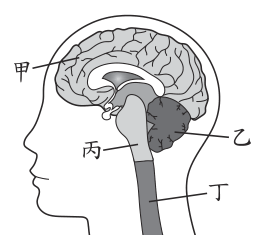
- （A）由甲產生槍聲的聽覺
- （B）由乙調節呼吸的快慢
- （C）由丙維持身體的平衡
- （D）由丁主掌步伐的大小
答案：（A）
詳解與考點
正解：槍聲傳入後形成聽覺，屬感覺的判斷，應由大腦負責。圖中甲為大腦，因此由甲產生槍聲的聽覺，故 A 為正解。
B：乙為小腦，主要協調動作與維持平衡；調節呼吸快慢的中樞在腦幹的延腦，不在乙，錯誤。
C：丙為腦幹，維持身體平衡與協調動作的是小腦，即乙而非丙，錯誤。
D：丁為脊髓，負責傳導與反射路徑；步伐大小的發動與控制由大腦主掌，不是丁，錯誤。
本題考點：中樞神經分工——大腦負責感覺判斷與隨意運動，小腦協調運動與平衡，腦幹調節呼吸等生命現象；構造判讀——先確認圖中代號對應的部位，再判斷功能。
第 11 題
圖(八)記錄了某人盡力吸氣後、盡力呼氣後，肺部中分別容納的氣體量。依此圖判斷胸腔變化，下列敘述何者正確？
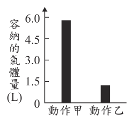
- （A）動作甲：橫膈上升且肋骨上舉
- （B）動作甲：橫膈下降且肋骨下降
- （C）動作乙：橫膈上升且肋骨下降
- （D）動作乙：橫膈下降且肋骨上舉
答案：（C）
詳解與考點
正解：圖中動作甲肺部氣體約 5.8 L、動作乙約 1.2 L。氣體量較少的動作乙代表盡力呼氣後；呼氣時橫膈上升、肋骨下降，胸腔縮小、肺容積減少，所以 C 為正解。
A：橫膈上升是呼氣動作，肋骨上舉是吸氣動作，兩者不能同時對應動作甲，錯誤。
B：動作甲是吸氣後，應為橫膈下降、肋骨上舉，錯誤。
D：橫膈下降、肋骨上舉是吸氣的胸腔擴大動作，不符合氣體量最少的動作乙，錯誤。
本題考點：呼吸運動——吸氣時橫膈下降、肋骨上舉，胸腔擴大；呼氣時橫膈上升、肋骨下降，胸腔縮小；肺容積判準——氣體量多為吸氣後，少為呼氣後。
第 12 題
下列實驗探討鹼的濃度對皂化反應的影響，步驟如下： 1. 準備四份30 g的椰子油。 2. 配製四杯同體積、不同濃度的氫氧化鈉溶液。 3. 將四份椰子油分別都和固定量的乙醇混合，再加入上述的鹼，邊加熱邊攪拌直到溶液出現黏稠狀態為止，並停止實驗。 4. 將產物分離出來並測量其質量，結果如表(一)：表(一) 從上述資訊，是否可知道鹼的濃度與反應速率之關係？
表(一)| 氫氧化鈉溶液濃度(%) | 10 | 20 | 30 | 40 |
|---|
| 肥皂質量(g) | 5.1 | 20.4 | 19.8 | 19.2 |
- （A）可以，鹼的濃度加倍，反應速率會變快為四倍
- （B）可以，鹼的濃度增加，反應速率會先增後微降
- （C）不行，因為本實驗所使用鹼的濃度並不相同
- （D）不行，因為實驗並未記錄各組反應所需的時間
答案：（D）
詳解與考點
正解：要探討「鹼的濃度對皂化反應速率」的影響。反應速率須比較達到相同反應程度所需的時間，但實驗只記錄表中肥皂質量：濃度 10%、20%、30%、40% 分別得到 5.1 g、20.4 g、19.8 g、19.2 g，沒有記錄各組反應所需時間，因此無法得知速率關係，故 D 為正解。
A：不能由肥皂質量直接推出濃度加倍後速率變為四倍，錯誤。
B：肥皂質量的增減是產量資料，不是反應快慢的時間資料，錯誤。
C：各組鹼濃度不同正是本實驗刻意操縱的變因，不是無法判斷的原因，錯誤。
本題考點：反應速率——須以反應物消耗量或產物生成量在單位時間內的變化判定；實驗判準——操縱濃度時，仍要測量各組時間，產物總質量不能單獨代表反應速率。
第 13 題
人類早在幾千年前就開始種植「玉米的祖先」作為糧食，但其口感和現在的玉米差異極大。經過長時間的育種，人類不斷利用具有某些特徵的植株進行雜交，漸漸地，雜交植株產生的「玉米粒」從原本較小且具有堅硬外殼的樣貌，變成趨近於現代玉米的樣貌。上述人類對玉米育種過程的敘述，下列何者最合理？
- （A）經由營養器官進行無性生殖
- （B）經由生殖器官進行有性生殖
- （C）親代與子代的表現型都相同
- （D）親代與子代的基因型都相同
答案：（B）
詳解與考點
正解：題幹的「雜交」表示兩個親本各提供生殖細胞，經受精產生後代，屬於利用生殖器官進行的有性生殖，因此 B 為正解。
A：營養器官的無性生殖由根、莖或葉等直接繁殖，不包含題幹所述的雜交。
C：長期育種後玉米粒由較小、具堅硬外殼改變為趨近現代玉米的樣貌，親子表現型不會都相同。
D：有性生殖會產生遺傳因子重新組合，親代與子代的基因型不會都相同。
本題考點：有性生殖——花等生殖器官產生生殖細胞，受精後形成子代；雜交育種——選取親本交配以組合特徵，子代可能與親代有不同表現型及基因型。
第 14 題
小芳連續14天朝南方觀察住家附近的月相，其中第8天到第14天的月相如圖(九)。根據觀察結果，下列何者最可能是他前7天所觀察到的月相變化？
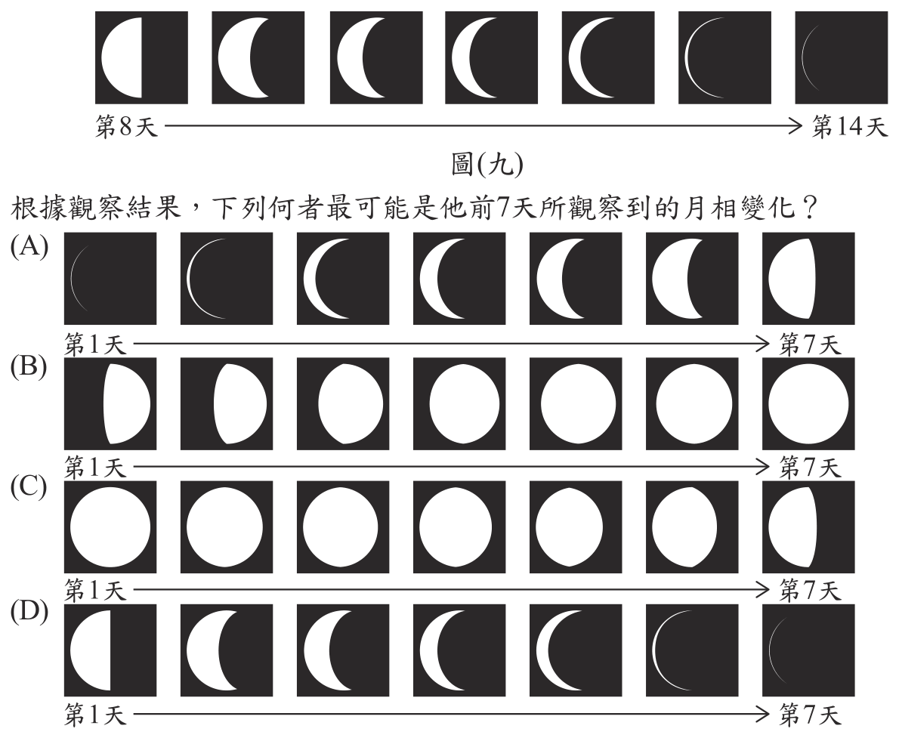
本題選項為上圖中的 A／B／C／D，請對照圖片作答。
答案：（C）
詳解與考點
正解：第 8 至 14 天已呈現左側亮的半月，即下弦月，並持續虧成細眉月；要往前倒推連續的月相。第 1 至 7 天應由接近滿月逐漸虧缺至下弦月，才能和第 8 天銜接，C 正是這個連續變化，故 C 為正解。
A：呈現由眉月增亮的方向，無法銜接第 8 天的下弦月，錯誤。
B：全程接近滿月、幾乎沒有連續變化，不符合月相每日逐漸改變，錯誤。
D：由半月虧至全暗的變化方向與第 8 天的月相銜接不合，錯誤。
本題考點：月相連續性——月相隨日期逐日漸變，須以前後日期的亮面變化銜接；下弦月判讀——下弦月後亮面繼續虧缺為細眉月，往前則由接近滿月逐漸虧至半月。
第 15 題
阿笙和朋友某日傍晚5點到海邊時，發現海水水位在當天最高的位置，便和朋友相約隔日再來。已知此地每天有兩次乾潮與兩次滿潮，若隔日他們想在海水退潮期間的一半到達此地，選擇下列哪個時段最合適？
- （A）上午5點～6點
- （B）上午8點～9點
- （C）上午11點～12點
- （D）下午2點～3點
答案：（B）
詳解與考點
正解：題幹要找「退潮期間的一半」，先由每天兩次滿潮、兩次乾潮判斷，滿潮到乾潮約隔 6 小時。當日 17:00 為滿潮：17:00+6 小時＝23:00 乾潮；23:00+6 小時＝隔日 05:00 滿潮；05:00+6 小時＝11:00 乾潮。隔日 05:00 到 11:00 的退潮中點為 08:00，故上午 8 點～9 點的 B 最合適。
A：05:00 是滿潮時刻，尚未到退潮期間的一半。
C：11:00 是乾潮時刻，已到退潮結束。
D：14:00 已超過 11:00 的乾潮時刻，不在該次退潮的中段。
本題考點：潮汐週期——每天兩次滿潮與兩次乾潮時，相鄰滿潮、乾潮約相隔 6 小時；時間中點——先找滿潮與乾潮時刻，再取兩時刻的中間。
第 16 題
小忠被室友大勇的打鼾聲吵得無法入眠，因此決定用手機量測大勇睡著時的打鼾聲，以實際數據來呈現此問題，其過程如圖(十)：圖(十) 以上對話中「……」處小忠說出下列哪一句話，最符合他想呈現的問題？
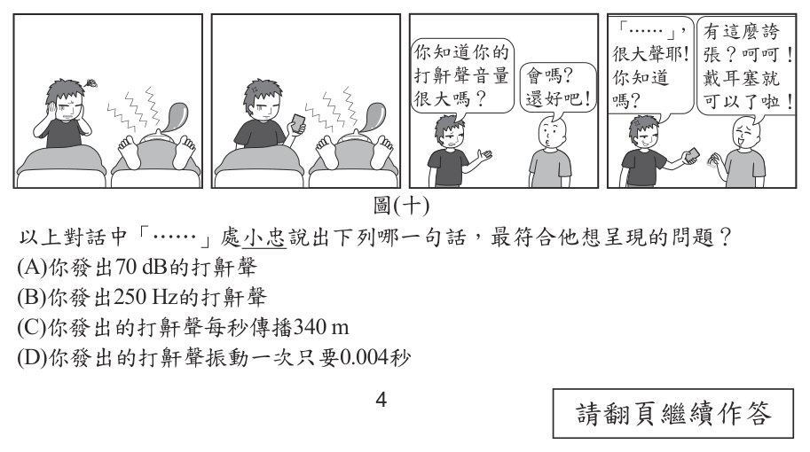
- （A）你發出70 dB的打鼾聲
- （B）你發出250 Hz的打鼾聲
- （C）你發出的打鼾聲每秒傳播340 m
- （D）你發出的打鼾聲振動一次只要0.004秒
答案：（A）
詳解與考點
正解：小忠想用數據呈現打鼾「很吵、很大聲」。聲音的響度以分貝 dB 表示，70 dB 可描述打鼾聲的大小，因此 A 為正解。
B：Hz 是頻率單位，主要描述音調高低，不是聲音大小，錯誤。
C：每秒傳播 340 m 是空氣中的聲速，不能呈現打鼾是否吵，錯誤。
D：振動一次需 0.004 秒是週期資訊，同樣對應頻率與音調，不是響度，錯誤。
本題考點：聲音三要素——響度對應聲音大小，以 dB 表示；頻率對應音調高低，以 Hz 表示；聲速描述傳播快慢，不能用來判斷吵不吵。
第 17 題
已知甲、乙兩星體位於太陽系，筱萍提出兩種方式判斷星體層級，如圖(十一)。根據恆星與其他星體的主要區分方法，圖中方式一與方式二是否正確？
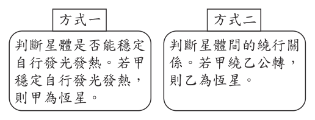
- （A）僅方式一正確
- （B）僅方式二正確
- （C）兩種方式皆正確
- （D）兩種方式皆錯誤
答案：（A）
詳解與考點
正解：恆星與其他星體的主要區分方法。恆星能穩定地自行發光發熱，方式一以甲是否穩定自行發光發熱判定甲為恆星，符合定義；方式二以甲繞乙公轉就判定乙為恆星，並不成立，因為行星與衛星也有繞行關係而不會自行發光發熱。因此僅方式一正確，故 A 為正解。
B：方式二不能以被環繞直接判定為恆星，錯誤。
C：方式一正確，但方式二錯誤，錯誤。
D：方式一確實以自行發光發熱掌握恆星定義，不能說兩種皆錯，錯誤。
本題考點：恆星定義——能穩定自行發光發熱的星體是恆星；天體關係判準——是否被其他星體繞行不足以判定其為恆星，須看是否自行發光發熱。
第 18 題
將物品放入圖(十二)的量筒中，由物品放入前、後的液面刻度差，可知該物品的體積。下列何者適合以上述方法測量其體積？
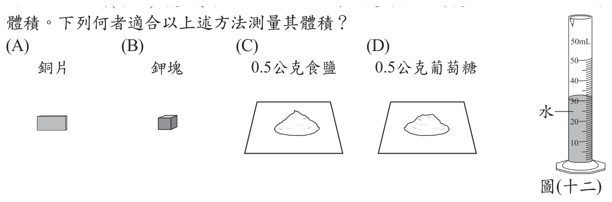
本題選項為上圖中的 A／B／C／D，請對照圖片作答。
答案：（A）
詳解與考點
正解：量筒排水法以物品放入前、後的液面刻度差求體積，因此物品必須不溶於水、不和水反應，且排開的水量要能讀出。A 的銅片不溶於水，也不與水反應，適合用此法測量體積，故為正解。
B：鉀是活性很大的鹼金屬，遇水會劇烈反應，甚至燃燒，不能放入量筒的水中測量。
C：食鹽易溶於水，放入後會溶解，量不到原固體排水的體積。
D：葡萄糖易溶於水，且 0.5 g 太少，液面變化幾乎讀不出，錯誤。
本題考點：排水法測體積——以液面刻度差代表排開水的體積；適用條件——待測物應不溶於水、不與水反應，並造成可辨讀的刻度變化。
第 19 題
「天然氣的主成分是甲烷(CH4)，已知產生相同熱量時，燃燒天然氣的二氧化碳 (CO 2)排放量約只有燃燒煤炭的一半，儘管如此，燃燒1公噸的甲烷仍會產生數公噸的二氧化碳，與淨零碳排放的目標有差異。」若要知道上述數公噸二氧化碳排放量的實際值為多少，需要甲烷和二氧化碳的下列何項資訊才能計算出來？
- （A）沸點
- （B）密度
- （C）比熱
- （D）分子量
答案：（D）
詳解與考點
正解：題幹已給 1 公噸甲烷的質量，要算燃燒後二氧化碳的質量，關鍵是用化學方程式的莫耳比與分子量換算。CH4+2O2→CO2+2H2O，1 莫耳 CH4 生成 1 莫耳 CO2。CH4 的分子量為 12+4×1=16；CO2 的分子量為 12+2×16=44。1 公噸 CH4 生成的 CO2 質量=1×44÷16=2.75 公噸，所以必須知道兩者的分子量，D 為正解。
A：沸點只能描述物質由液態變氣態的溫度，不能把已知質量換算成反應產物質量。
B：密度用於體積與質量的換算，但題幹已直接給 1 公噸的質量，無須密度。
C：比熱是物質升高或降低溫度所需熱量的性質，與依反應式計算生成物質量無關。
本題考點：化學計量——先由平衡方程式取得莫耳比，再以分子量把莫耳量換成質量；質量比計算——莫耳比為 1:1 時，生成物與反應物的質量比等於其分子量比。
第 20 題
蝦子的頭部有個稱為「觸角腺」的構造，可以過濾體內的液體，再將其中有用的物質吸收，並排出多餘的含氮廢物。依上述資訊推測，觸角腺的功能最類似人體哪個器官的功能？
- （A）肝臟
- （B）大腸
- （C）腎臟
- （D）尿道
答案：（C）
詳解與考點
正解：題幹的「過濾體內液體、再吸收有用物質、排出含氮廢物」正是腎臟的排泄功能；腎臟過濾血液形成原尿，再重新吸收葡萄糖、水分等有用物質，將尿素等含氮廢物隨尿液排出，故 C 為正解。
A：肝臟主要負責代謝、解毒等功能，不是過濾後再吸收並排出尿液的器官。
B：大腸主要吸收水分並形成糞便，與題幹所述含氮廢物排出不符。
D：尿道只是尿液排出體外的通道，沒有過濾或再吸收功能。
本題考點：排泄器官功能類比——辨認「過濾、再吸收、排出含氮廢物」應連結腎臟；須區分腎臟負責形成尿液，尿道僅負責輸送尿液。
第 21 題
某魚池中原僅有黑色鯉魚，小瑛將50隻紅色鯉魚放入此魚池。一段時間後，再由此魚池隨機捕捉50隻鯉魚，發現其中5隻為紅色鯉魚。若從放入鯉魚到捕捉前，沒有鯉魚遷入、遷出、出生、死亡，且根據捉放法計算出來的黑色鯉魚數量為 X，則下列敘述何者正確？
- （A）X為500隻，此數值為黑色鯉魚的實際數量
- （B）X為500隻，此數值為黑色鯉魚的可能數量
- （C）X為450隻，此數值為黑色鯉魚的實際數量
- （D）X為450隻，此數值為黑色鯉魚的可能數量
答案：（D）
詳解與考點
正解：題幹以捉放法估算黑色鯉魚數量，先用「放入紅色標記魚占總數的比例，約等於再捕樣本中紅色魚的比例」。50／（X+50）＝5/50；兩邊同乘 50（X+50），得 2500=5X+250；5X=2250；X=450。捉放法所得為估計值，故 450 是黑色鯉魚的可能數量，D 為正解。
A：500 的計算不正確，且捉放法不能直接得到實際數量。
B：雖寫「可能數量」，但將 X 算成 500；依比例計算應為 450。
C：450 的數值正確，但捉放法有取樣誤差，不能稱為實際數量。它看起來對，是因為計算值確為 450，卻忽略此法只能估算。
本題考點：捉放法——標記個體比例約等於再捕樣本中的標記比例；估算判準——以比例解出的是族群可能數量，非精確的實際數量。
第 22 題
小明進行圖(十三)中的四次實驗，實驗中的槓桿、砝碼皆相同，槓桿每段長度皆為5 cm，進行實驗一、二後，他根據結果推論出論點一，進行實驗三後，他提出論點二，之後進行實驗四，則下列敘述何者最合理？圖(十三)
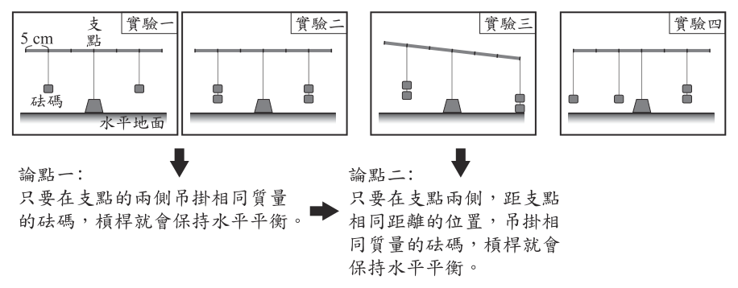
- （A）實驗三的結果與論點一相符
- （B）實驗四的結果與論點一不相符
- （C）實驗四的結果可以證明論點二不正確
- （D）實驗四的結果無法使用論點二來說明
答案：（D）
詳解與考點
正解：題幹的關鍵在於實驗四雖達平衡，卻不符合論點二「支點兩側等距、吊掛等量砝碼」的適用前提。左側力矩＝1×3+1×1=4，右側力矩＝2×2=4，兩側力矩相等，所以槓桿水平平衡；但左側砝碼分別距支點15 cm與5 cm，右側兩個砝碼同距支點10 cm，並非等距等量，故其結果無法用論點二說明，D為正解。
A：實驗三雖兩側砝碼等量，距支點的距離不同而會傾斜，與論點一「等量即平衡」不相符，錯誤。
B：實驗四左右兩側砝碼總數相同，且確實平衡，符合論點一的預測，不是「不相符」，錯誤。
C：實驗四只是論點二前提以外的情形；它看起來能反駁論點二，是因為同樣呈現平衡，但力矩相等可另行解釋，不能否定論點二在等距等量條件下的正確性，錯誤。
本題考點：槓桿平衡——先算兩側力矩，力×支點距離相等才平衡；論點適用範圍——實驗結果能否支持或反駁論點，須先核對是否具備該論點的前提條件。
第 23 題
網路流傳一種說法：「使用加食鹽的熱水拖地，地板會比較快乾。」小綺想要找出影響地板乾燥速率的變因，使用表(二)中四組的水來拖地，當中的哪兩組相互比較，最不可能達到他的目的？
表(二)| 組別 | 拖地的水 |
|---|
| 一 | 熱水加食鹽 |
| 二 | 熱水沒加食鹽 |
| 三 | 冷水加食鹽 |
| 四 | 冷水沒加食鹽 |
- （A）第一組和第二組
- （B）第一組和第三組
- （C）第二組和第三組
- （D）第二組和第四組
答案：（C）
詳解與考點
正解：題幹要找出影響乾燥速率的變因，關鍵是比較的兩組必須只改變一個變因。表（二）的第二組是熱水沒加食鹽，第三組是冷水加食鹽，水溫與是否加鹽同時不同；即使乾燥速率不同，也無法判定原因是溫度或食鹽，故C為正解。
A：第一組與第二組皆為熱水，只差是否加食鹽，可以檢驗食鹽的影響，錯誤。
B：第一組與第三組皆加食鹽，只差水溫，可以檢驗水溫的影響，錯誤。
D：第二組與第四組皆未加食鹽，只差水溫，可以檢驗水溫的影響，錯誤。
本題考點：控制變因——檢驗單一變因時，其餘可能影響結果的條件必須相同；比較兩組時若有兩個變因同時改變，就不能判定結果差異由何者造成。
第 24 題
已知綠色植物可同時進行光合作用與呼吸作用，而光合作用的過程如下：關於甲、乙、丙三種物質的敘述，下列何者最合理？
- （A）甲主要由植物從土壤中吸收
- （B）乙主要由植物根部排出至土壤
- （C）乙與呼吸作用的產物相同
- （D）丙可作為呼吸作用的反應物
答案：（D）
詳解與考點
正解：光合作用以二氧化碳和水為反應物，產生葡萄糖和氧氣。題示流程可確定甲為二氧化碳，乙、丙則分別代表葡萄糖與氧氣，但不必判定兩者的對應順序；因為葡萄糖和氧氣都可作為呼吸作用的反應物，所以丙無論是哪一種都符合敘述，故 D 為正解。
A：甲為二氧化碳，植物主要由葉片的氣孔從空氣中取得，不是主要由土壤吸收。
B：乙是葡萄糖或氧氣。葡萄糖是植物製造的養分，氧氣主要經氣孔釋出，兩者都不是主要由根部排出至土壤。
C：乙是葡萄糖或氧氣，兩者都是呼吸作用的反應物；呼吸作用的產物是二氧化碳和水，因此乙不會與呼吸作用的產物相同。
本題考點：光合作用與呼吸作用的物質關係——光合作用的產物葡萄糖、氧氣，正是呼吸作用的反應物；即使圖中無法區分乙、丙各代表何者，仍可利用兩者共有的性質判斷。
第 25 題
若某動物的黑白毛色僅由一對遺傳因子控制，黑色為顯性的特徵、白色為隱性的特徵。斌斌以黑棋代表顯性遺傳因子、白棋代表隱性遺傳因子，進行毛色遺傳的模擬實驗，於甲、乙兩個袋子皆放入50顆黑棋與50顆白棋混勻，再分別從兩袋各隨機抽出一顆棋子配對並記錄結果，接著各自放回原袋中混勻，反覆進行100次配對。關於結果紀錄中，毛色為黑、毛色為白的子代數量，最可能依序為何？
- （A）49、51
- （B）78、22
- （C）26、74
- （D）100、0
答案：（B）
詳解與考點
正解：題幹中每一袋都有 50 顆黑棋與 50 顆白棋，表示顯性遺傳因子 A 與隱性遺傳因子 a 的機率各為 1/2。AA=1/2×1/2=1/4；Aa=1/2×1/2+1/2×1/2=1/2；aa=1/2×1/2=1/4。黑毛為 AA 或 Aa，機率＝1/4+1/2=3/4；白毛為 aa，機率＝1/4。100 次配對約為黑毛 75 隻、白毛 25 隻，最接近 78、22，故 B 為正解。
A：49、51 約為 1:1，誤把每種遺傳因子各半直接當作子代表現型比例。
C：26、74 將黑毛與白毛的 3:1 機率倒置。
D：aa 組合仍有 1/4 機率，100 次中白毛不可能最可能為 0。
本題考點：孟德爾遺傳——Aa×Aa 的基因型比例為 1:2:1，顯性表現型與隱性表現型比例為 3:1；機率模擬——重複抽樣次數多時，結果通常接近理論比例。
第 26 題
如圖(十四)，圖中某海域東、西兩側的陸地，受到板塊間相互運動的影響，距離逐年增加，此海域面積有逐漸擴大的趨勢。根據上述資訊，下列推論何者最合理？
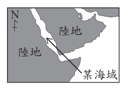
- （A）此海域底部可發現岩漿湧出所形成的火成岩
- （B）此海域底部可發現地球上最古老的海洋地殼
- （C）圖中此海域東、西兩側的陸地目前在同一板塊上
- （D）圖中此海域東、西兩側的陸地之間有海溝的存在
答案：（A）
詳解與考點
正解：東、西兩側陸地距離逐年增加且海域擴大，表示板塊在張裂分離，海底會有岩漿湧出、冷卻形成新的火成岩，故A為正解。
B：張裂處形成的是新生、最年輕的海洋地殼，最古老的海洋地殼在遠離中洋脊處，錯誤。
C：兩側陸地正在被分開，應分屬不同板塊，不會在同一板塊上，錯誤。
D：海溝形成於板塊聚合與隱沒處，和本題的張裂擴張情境相反，錯誤。
本題考點：張裂性板塊邊界——兩側板塊分離時，海底擴張並形成中洋脊；海洋地殼年齡——新地殼在中洋脊附近，距離中洋脊愈遠通常愈老。
第 27 題
小華想藉由某地的氣象觀測資料來區分當地的對流層和平流層，他預計繪製的圖表橫軸與縱軸資料類型如圖(十五)。依據上述資訊，關於甲、乙兩圖呈現的趨勢是否可用來區分對流層和平流層的說明，圖(十五) 下列何者最合理？
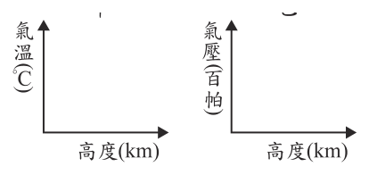
- （A）甲圖可以，因氣溫在對流層隨高度上升而降低，在平流層則不會
- （B）乙圖可以，因氣壓在對流層隨高度上升而降低，在平流層則不會
- （C）兩圖都不可以，因氣溫與氣壓無論在對流層或平流層皆大致固定
- （D）兩圖都可以，因氣溫與氣壓在對流層皆隨高度上升而降低，在平流層則不會
答案：（A）
詳解與考點
正解：題幹要用高度變化區分對流層與平流層，關鍵是氣溫的趨勢會在兩層間轉變。氣溫在對流層隨高度上升而降低，進入平流層後因臭氧吸收紫外線而隨高度上升，甲圖的氣溫—高度趨勢可據此區分，故A為正解。
B：氣壓在對流層與平流層都隨高度上升而下降，沒有可用來分層的轉折，錯誤。
C：氣溫與氣壓並非大致固定；氣溫有分層趨勢，氣壓則隨高度降低，錯誤。
D：它看起來對，是因為對流層的氣溫、氣壓都會隨高度下降；但平流層中氣壓仍持續下降，只有氣溫趨勢改變，錯誤。
本題考點：大氣分層——對流層氣溫隨高度下降，平流層氣溫隨高度上升；判讀圖表時要找能在分層交界呈現不同趨勢的量，而非只看是否隨高度改變。
第 28 題
延長線可延長電器的使用距離，並讓多個電器使用同一插座，圖(十六)為一延長線外包裝的安全注意事項，其中「壓鈕」的功能等同於無熔絲開關，則關於此注意事項中的超載，最可能是指下列何者？
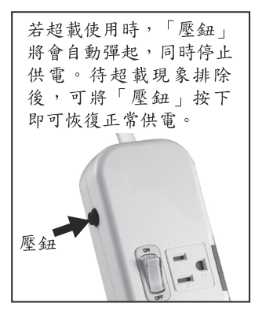
- （A）流經電器的電流值超過電器可負荷的最大電流值
- （B）輸入電器的電壓值超過電器可負荷的最大電壓值
- （C）流經延長線的電流值超過延長線可負荷的最大電流值
- （D）輸入延長線的電壓值超過延長線可負荷的最大電壓值
答案：（C）
詳解與考點
正解：壓鈕等同無熔絲開關，保護對象是延長線本身。多個電器共用插座時，流經延長線的總電流若超過延長線可負荷的最大電流值，即為超載，會使開關跳脫斷電，故 C 為正解。
A：這是單一電器可負荷電流的問題，保護對象不是延長線，錯誤。
B：超載與跳脫主要由電流過大造成，不是輸入電器的電壓超過可負荷值，錯誤。
D：輸入延長線的電壓過高不是題幹所稱、多電器共用造成的超載，錯誤。
本題考點：延長線安全——多電器同時使用會使總電流增加；超載判準——流經延長線的總電流超過其最大可負荷電流，無熔絲開關便跳脫保護。
第 29 題
穿山龍為一種藥用植物，也俗稱棒槌瓜，葉呈掌狀，花朵為白色，種子的構造具有翅。圖(十六) 根據上述資訊，下列推論何者最合理？
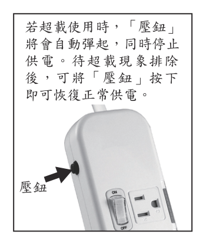
- （A）棒槌瓜的學名為穿山龍
- （B）成熟葉背可見孢子囊堆
- （C）其植株具有果實的構造
- （D）其植株具有毬果的構造
答案：（C）
詳解與考點
正解：題幹的「花朵為白色」觸發被子植物的判斷；被子植物開花後，子房發育成果實包住種子，因此穿山龍植株具有果實構造，C為正解。
A：穿山龍是俗名；學名須依拉丁文二名法命名，不是俗名，錯誤。
B：孢子囊堆是蕨類的構造，題幹已指出其有種子，錯誤。
D：毬果是松、杉等裸子植物的構造；會開花的被子植物不具毬果，錯誤。
本題考點：植物分類——有花、能形成果實的是被子植物；構造判讀——孢子囊堆屬蕨類，毬果屬裸子植物，果實屬被子植物。
第 30 題
將甲、乙、丙三個質量相等的金屬塊，分別以相同的穩定熱源加熱，其溫度(T)與加熱時間(t)的關係如圖(十七)。若加熱過程中無熱量散失，甲、乙、丙的比熱分別為S甲、S乙、S丙，則下列比熱的大小關係何者最合理？
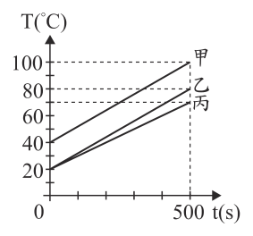
- （A）S甲＝S乙＜S丙
- （B）S甲＝S乙＞S丙
- （C）S甲＜S乙＝S丙
- （D）S甲＞S乙＝S丙
答案：（A）
詳解與考點
正解：三金屬塊質量相等、熱源相同且無熱量散失，應以加熱曲線的斜率比較比熱。由Q=mSΔT，在相同加熱時間內吸收熱量相同，升溫斜率愈大表示ΔT愈大、比熱S愈小；圖中甲、乙斜率相同且大於丙，所以S甲＝S乙＜S丙，A為正解。
B：此項把甲、乙與丙的比熱關係顛倒；丙升溫最慢、斜率最小，應有最大比熱，錯誤。
C：甲、乙的斜率相同，不應判為甲的比熱較小，錯誤。
D：甲、乙斜率相同，且兩者都比丙陡，不能判為甲比熱較大，錯誤。
本題考點：比熱與加熱曲線——在質量、加熱功率相同且無散熱時，以溫度—時間圖的斜率判斷，斜率愈大比熱愈小；比較時看升溫率，不看起始或終止溫度。
第 31 題
下列選項為在金屬鑰匙上鍍銅的電鍍裝置示意圖，圖中直流電源正、負極的標示和電鍍液中銅離子的移動方向，何者正確？
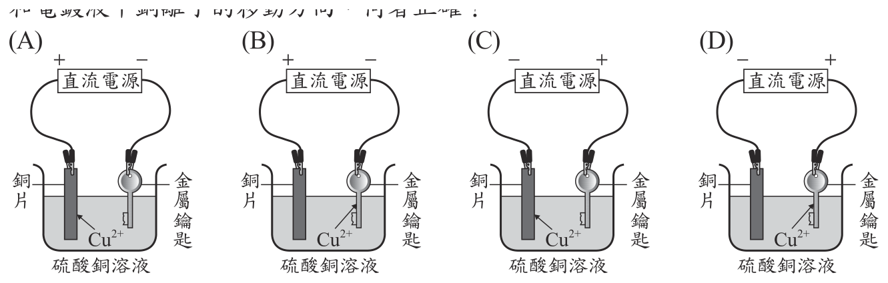
本題選項為上圖中的 A／B／C／D，請對照圖片作答。
答案：（B）
詳解與考點
正解：鍍銅時，待鍍的金屬鑰匙必須接電源負極作陰極，銅片接正極作陽極；溶液中的Cu²⁺受陰極吸引，朝鑰匙移動並還原鍍上。B圖的左側銅片接正極、右側鑰匙接負極，Cu²⁺箭頭指向鑰匙，故B為正解。
A：電源正、負極接反，鑰匙沒有作為陰極，錯誤。
C：雖將鑰匙接負極，但Cu²⁺移動方向錯誤；陽離子應朝陰極的鑰匙移動，錯誤。
D：雖將鑰匙接負極，但Cu²⁺箭頭未指向鑰匙，錯誤。
本題考點：電鍍——待鍍物接負極為陰極，供應鍍層的金屬接正極為陽極；離子移動——正銅離子朝陰極移動並在陰極還原析出。
第 32 題
一個密度均勻的長方體木塊，長、寬、高分別為30 cm、20 cm、10 cm，置於水平桌面，此時木塊對於桌面所造成的壓力為 P。今先將此木塊的長截去10 cm，即甲部分，再將寬截去10 cm，即乙部分，最後將高截去2 cm，即丙部分，如圖(十八)，則此時木塊對桌面所造成的壓力應為下列何者？ P
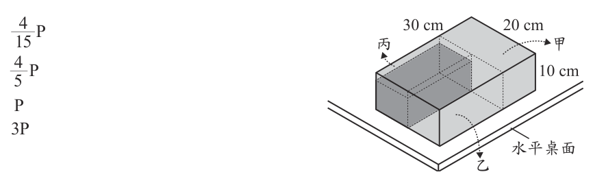
- （A）\(\dfrac{4}{15}P\)
- （B）\(\dfrac{4}{5}P\)
- （C）\(P\)
- （D）\(3P\)
答案：（B）
詳解與考點
正解：題幹截去木塊三個方向的部分，須同時比較重量與接觸面積。原體積＝30×20×10=6000 cm³；截後長＝30−10=20 cm，寬＝20−10=10 cm，高＝10−2=8 cm，截後體積＝20×10×8=1600 cm³，重量為原來1600/6000。原底面積＝30×20=600 cm²，截後底面積＝20×10=200 cm²，為原來1/3。壓力比＝(1600/6000)÷(200/600)＝(4/15)÷(1/3)＝4/5，所以新壓力＝4/5P，B為正解。
A：4/15是重量比，只算重量減少而忽略底面積也縮小，錯誤。
C：新壓力比已算得4/5，不會維持P，錯誤。
D：它看起來可能較大，是因為底面積縮小；但重量減少的比例更大，結果壓力反而為4/5P，錯誤。
本題考點：壓力——壓力＝重量÷接觸面積；均勻物體截去部分後，重量與體積成正比，計算壓力改變時須把重量比再除以接觸面積比。
第 33 題
將一個陶瓷材質的碗放入水槽中，碗內裝有水，碗體為實心，圖(十九)中甲、乙分別為靜止平衡時的假想剖面示意圖。已知此種陶瓷的密度大於水，根據「碗內外的水面高度」，判斷甲、乙兩張示意圖是否合理？
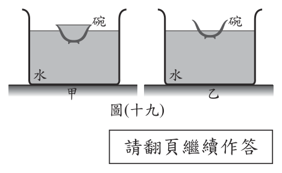
- （A）甲、乙都合理
- （B）甲、乙都不合理
- （C）甲合理、乙不合理
- （D）甲不合理、乙合理
答案：（B）
詳解與考點
正解：題幹限定碗體為實心且陶瓷密度大於水，判斷時須同時符合漂浮的浮力平衡與靜止水面的高度關係。碗與碗內水漂浮時，排開水的重量等於系統總重，水槽水位會上升；甲圖畫碗內水面高於碗外、乙圖畫碗內水面低於碗外，兩者皆不能符合圖示情況下的靜力平衡與液面高度關係，故B為正解。
A：甲、乙的內外水面高度關係皆不合理，不能都成立，錯誤。
C：甲圖的水面關係不符合靜力平衡，錯誤。
D：乙圖的水面關係不符合靜力平衡，錯誤。
本題考點：浮力平衡——漂浮物排開液體的重量等於物體總重；靜止液體判讀——水面高度須同時符合連通與受力平衡條件，不能只憑碗浮得高低判斷。
第 34 題
圖 ( 二十) 為某網站分析臺灣在此季節較為乾熱，而日本、中國多發生暴雨原因時所使用的示意圖，圖中粗黑曲線為等壓線，甲為某天氣系統，而受到甲與圖中北方高壓的影響，使鋒面長期存在於日本到中國間，導致圖中的區域暴雨。根據上述資訊，圖中的甲以及所提到的鋒面最可能為下列何者？
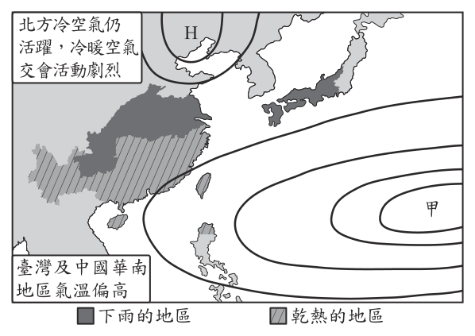
- （A）甲為低氣壓，鋒面是冷鋒
- （B）甲為低氣壓，鋒面是滯留鋒
- （C）甲為高氣壓，鋒面是冷鋒
- （D）甲為高氣壓，鋒面是滯留鋒
答案：（D）
詳解與考點
正解：題幹的「鋒面長期存在」是滯留鋒的判準，而臺灣乾熱則指向高氣壓的下沉氣流。甲為高氣壓，與北方高壓影響使鋒面長期滯留於日本到中國間，造成持續暴雨，故D為正解。
A：甲不應判為低氣壓，且長期存在的鋒面也不是冷鋒，錯誤。
B：滯留鋒判斷正確，但低氣壓通常伴隨上升氣流與較不穩定天氣，不符臺灣乾熱的甲，錯誤。
C：甲為高氣壓正確；它看起來對，是因為冷鋒也能降雨，但冷鋒會隨冷氣團推進，題幹強調長期滯留，應判為滯留鋒，錯誤。
本題考點：天氣系統——高氣壓下沉，天氣較穩定乾熱；鋒面判讀——兩氣團勢均力敵、鋒面長時間少移動時為滯留鋒，常造成持續降雨。
第 35 題
圖(二十ㄧ)中四個磁針的黑色部分代表 N 極，且均放置於水平桌面上導線的正上方。小惠想藉由觀察磁針是否發生偏轉來判斷電路的電流是否接通，則下列哪一個磁針最不適合作為判斷的依據？
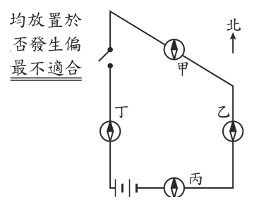
- （A）甲
- （B）乙
- （C）丙
- （D）丁
答案：（C）
詳解與考點
正解：要藉磁針偏轉判斷電流是否接通，通電導線在磁針處形成的磁場方向不能與磁針原本南北指向平行。丙位置的磁場方向與磁針N極原指向平行或反向，通電後不會明顯偏轉，最不適合作判斷依據，故C為正解。
A：該處磁場與磁針原指向垂直或斜交，通電會有明顯偏轉，可以作判斷，錯誤。
B：該處磁場與磁針原指向不平行，通電會有明顯偏轉，可以作判斷，錯誤。
D：該處磁場與磁針原指向不平行，通電會有明顯偏轉，可以作判斷，錯誤。
本題考點：電流磁效應——通電導線周圍有磁場，可用安培右手定則判斷方向；磁針判讀——外加磁場與原指向平行時不易看出偏轉，垂直或斜交時較適合檢驗。
第 36 題
取20 g蔗糖置入20 g水中，攪拌均勻後得到甲杯水溶液，另取30 g蔗糖置入20 g 水中，攪拌均勻後得到乙杯水溶液。已知蔗糖均完全溶解，則甲和乙兩杯蔗糖水溶液的重量百分率濃度比是多少？
- （A）1：1
- （B）2：3
- （C）4：5
- （D）5：6
答案：（D）
詳解與考點
正解：題幹要比較重量百分率濃度，須以「溶質質量／溶液總質量」計算，而非只比蔗糖質量。甲杯：溶液質量＝20 g+20 g=40 g；濃度＝20/40=50％。乙杯：溶液質量＝30 g+20 g=50 g；濃度＝30/50=60％。甲：乙＝50％：60％＝5:6，因此 D 為正解。
A：1:1 忽略兩杯的溶質質量與溶液總質量不同。
B：2:3 是蔗糖質量 20 g：30 g，誤把溶質質量比當成濃度比。
C：4:5 未依溶液總質量算出 50％與 60％，比值錯誤。
本題考點：重量百分率濃度——濃度＝溶質質量／溶液質量×100％；比較濃度——每杯先求溶液總質量與百分率，再化簡其比。
第 37 題
蘇蘇在試管中加入蛋白質溶液與人體消化液中以蛋白質為受質的某酵素，充分混合後放置於適宜作用的穩定環境，蘇蘇接著每隔一段時間測量試管中蛋白質與 X 物質的濃度，結果如圖(二十二)。已知X物質為蛋白質被分解後的產物，則關於此酵素的推論，下列何者最合理？
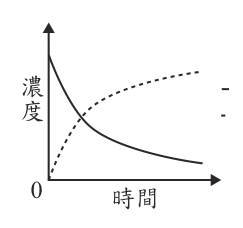
- （A）可能由膽汁中取得此酵素
- （B）可能由胰液中取得此酵素
- （C）此酵素催化 X 物質的分解
- （D）此酵素催化 X 物質的合成
答案：（B）
詳解與考點
正解：題幹已知 X 是蛋白質被分解後的產物，圖中蛋白質濃度隨時間下降、X 濃度上升，表示酵素催化蛋白質分解成 X，屬蛋白質分解酵素。人體的胰液含有胰蛋白酶，可提供此類酵素，故 B 為正解。
A：膽汁的作用是乳化脂肪，不含消化酵素，更不是分解蛋白質的酵素來源，錯誤。
C：曲線顯示 X 是由蛋白質分解而增加，酵素催化的受質是蛋白質，不是催化 X 的分解，錯誤。
D：X 的濃度上升是蛋白質分解的結果，不是酵素催化 X 合成；酵素作用方向判反，錯誤。它看起來對，是因為 X 的量增加，但要分辨「生成 X」與「以 X 為受質」不同。
本題考點：濃度曲線判讀——受質濃度下降、產物濃度上升時，表示受質被分解為產物；消化液功能——胰液含蛋白質分解酵素，膽汁只乳化脂肪而不含消化酵素。
第 38 題
圖(二十三)為嘉義在6/1～隔年1/1的白天時數變化圖，已知某城市位於北半球且緯度比臺灣高，則下列有關此城市與嘉義在相同日期間的白天時數圖，何者最合理？
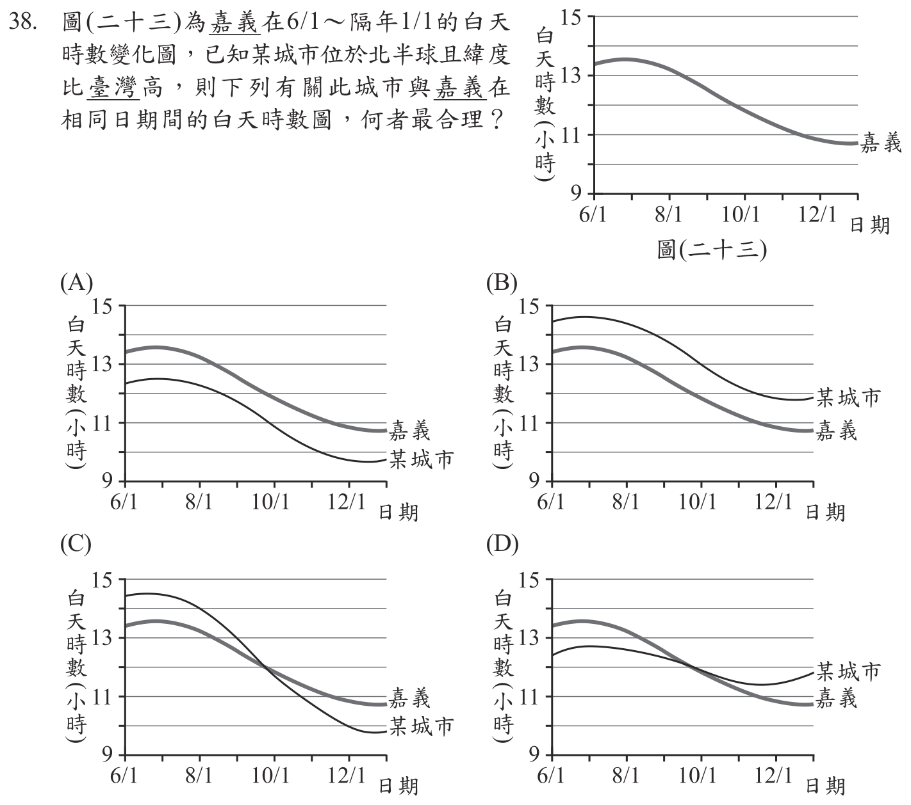
本題選項為上圖中的 A／B／C／D，請對照圖片作答。
答案：（C）
詳解與考點
正解：題幹的關鍵條件是「北半球」且緯度比嘉義高，須用高緯地區白天時數年變化振幅較大的判準。北半球夏季的白天較長，高緯城市在 6～7 月應比嘉義更長；冬季的白天較短，在 12 月應比嘉義更短，因此兩地曲線會在秋季交叉。C 圖顯示該城市夏季高於嘉義、冬季低於嘉義，約在 10 月交叉，振幅較大，故 C 為正解。
A：某城市全程低於嘉義，不符合高緯城市在北半球夏季白天應較長。
B：某城市全程高於嘉義，不符合高緯城市在冬季白天應較短。
D：曲線振幅太小且沒有明顯交叉，不符合緯度愈高、白天時數季節變化愈大的特性。
本題考點：緯度與晝長——北半球夏季往高緯處白天較長、冬季較短；圖表判讀——比較兩地曲線時，同時檢查夏冬相對高低、交叉情形與年變化振幅。
第 39 題
甲、乙兩人討論從人體肺臟、肝臟流出的血液進入心臟之路徑，以下為兩人看法：甲：肺臟流出的血液會由血管最先進入右心房。乙：肝臟流出的血液會由血管最先進入右心室。甲、乙兩人的看法是否正確？
- （A）僅甲正確
- （B）僅乙正確
- （C）兩人皆正確
- （D）兩人皆錯誤
答案：（D）
詳解與考點
正解：題幹要判斷血液由肺臟、肝臟流出後最先進入心臟的部位。肺臟流出的血經肺靜脈先進入左心房，不是右心房，甲錯；肝臟流出的血經肝靜脈、下腔靜脈先進入右心房，不是右心室，乙也錯，故 D 為正解。
A：甲把肺靜脈流入處說成右心房，錯誤。
B：乙把肝臟回流血最先進入處說成右心室，錯誤。
C：甲、乙分別錯在肺靜脈流入左心房及下腔靜脈流入右心房，錯誤。
本題考點：血液循環路徑——肺靜脈將肺臟流出的血送入左心房；體循環靜脈回流判準——肝靜脈經下腔靜脈先進入右心房，再進入右心室。
第 40 題
在一杯1.0 M氫氧化鈉水溶液中 (含數滴廣用指示劑)，持續滴入1.0 M的鹽酸，直到水溶液的顏色表示呈中性即停止，如圖( 二十四)。比較滴入前與停止滴入時燒杯中的鈉離子濃度變化，下列說明何者最合理？
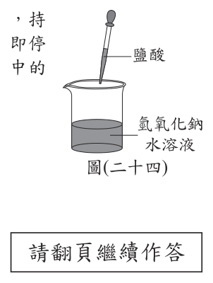
- （A）因為溶液體積增加，所以鈉離子濃度減少
- （B）因為鈉離子數目沒有改變，所以鈉離子濃度不變
- （C）因為鈉離子質量沒有改變，所以鈉離子濃度不變
- （D）因為中和反應形成鹽類析出，所以鈉離子濃度減少
答案：（A）
詳解與考點
正解：題幹比較滴入鹽酸前後的鈉離子濃度，關鍵是濃度＝莫耳數／溶液體積。NaOH+HCl→NaCl+H2O，Na⁺是旁觀離子，滴入前後其莫耳數不變；持續滴入1.0 M鹽酸使溶液總體積增加，所以在分子不變、分母變大的情況下，鈉離子濃度減少，故 A 為正解。
B：鈉離子數目不變只代表其莫耳數不變；濃度還要除以溶液體積，忽略體積增加而誤判不變。
C：鈉離子質量不變同樣不能推出濃度不變，因為溶液體積已增加。
D：中和後形成的NaCl是可溶鹽，完全溶於水，不會析出沉澱；鈉離子仍留在溶液中。
本題考點：溶液濃度——以濃度＝莫耳數／體積判斷；中和反應中旁觀離子的莫耳數可不變，但加入溶液造成體積增加時，濃度仍會降低；可溶性NaCl不會以沉澱移除鈉離子。
第 41 題
地表附近有甲、乙、丙三個相同的小球，分別受到F甲、F乙、F丙三個鉛直向上的外力作用，外力作用時小球的運動情形如圖(二十五)。若過程中重力加速度大小固定，且不考慮空氣阻力，則三個外力的大小關係應為下列何者？
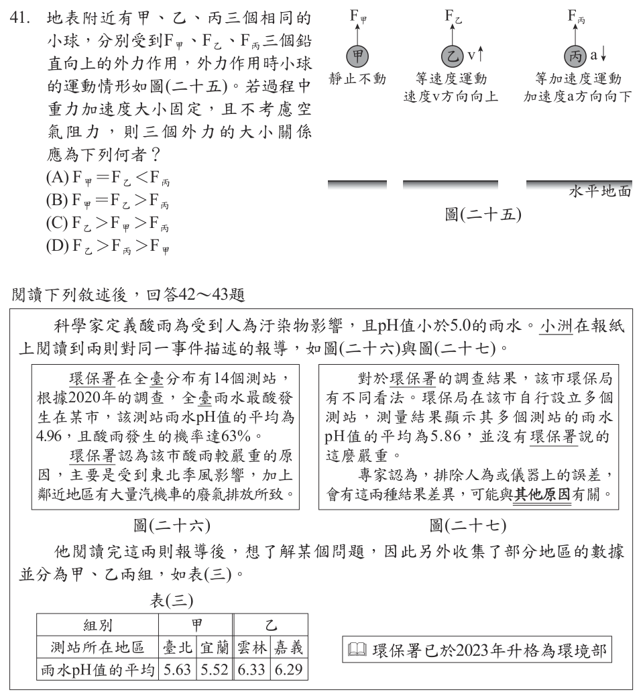
- （A）F甲＝F乙＜F丙
- （B）F甲＝F乙＞F丙
- （C）F乙＞F甲＞F丙
- （D）F乙＞F丙＞F甲
答案：（B）
詳解與考點
正解：三球相同，重力W相同；題幹要由運動狀態判斷合力，再比較向上外力。甲靜止，合力為0，所以F甲＝W。乙等速向上，合力也為0，所以F乙＝W。丙等加速度向下，合力向下，因此W>F丙。故F甲＝F乙＞F丙，B 為正解。
A：把丙的向上外力判成最大；丙加速度向下代表重力大於向上外力，F丙應小於W。
C：把乙等速向上誤認為需要較大外力；等速運動的合力為0，所以F乙＝W，與甲相同。
D：同樣誤認乙等速向上時F乙必最大，且F丙不可能大於F甲。
本題考點：牛頓運動定律——靜止或等速直線運動時合力為0；鉛直受力判讀——向上外力等於重力時不加速，重力大於向上外力時加速度向下。
第 42 題
圖(二十七)中，造成兩種結果差異的其他原因其他原因，最可能為下列何者？
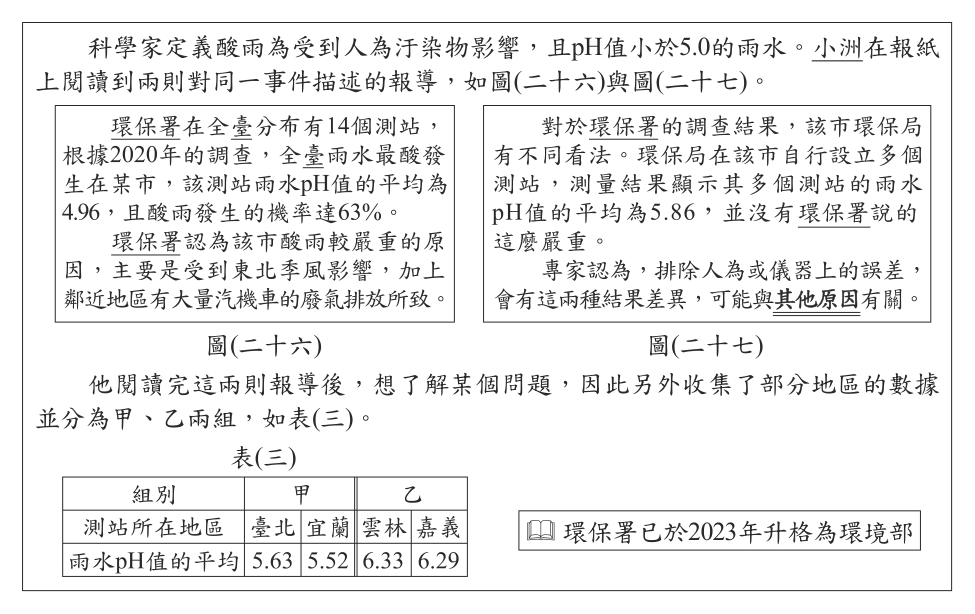
- （A）該市酸雨的發生機率高，超過50%
- （B）環保署與該市環保局對於酸雨的定義不同
- （C）環保署所測出的該市雨水pH值太接近5.0
- （D）單一測站的測量結果會與多個測站平均值有差異
答案：（D）
詳解與考點
正解：題幹問兩種酸雨判定結果不同的其他原因，關鍵是取樣範圍不同。單一測站的雨水pH值本來可能與多個測站的平均值不同，因此環保署與地方以不同測站資料判讀時，結論可能不同，D為正解。
A：酸雨發生機率是否超過50%，不能直接解釋兩單位為何得到不同結果，錯誤。
B：兩單位對酸雨的定義皆為pH<5.0，並非定義不同，錯誤。
C：pH值接近5.0只表示接近臨界值，仍未說明單一測站與多站平均的差異，錯誤。
本題考點：取樣與平均——單一測站的數值不一定等於多個測站的平均值；解釋資料差異時，先比較資料來源、取樣地點與彙整方式是否相同。
第 43 題
將表(三)的資料分成甲、乙兩組，最可能是想用來了解下列哪一個問題？
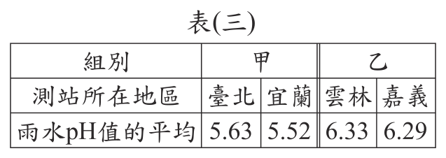
- （A）位於東北季風迎、背風面是否會影響判定酸雨的標準
- （B）位於東北季風迎、背風面是否會影響雨水pH值的平均
- （C）各地區雨水pH值的平均高低是否影響酸雨發生的機率
- （D）各地區雨水pH值的平均高低是否影響人為汙染物的種類
答案：（B）
詳解與考點
考點：實驗設計中分組的目的，要看「分組依據」對應到哪個變因。題目把表（三）資料依「位於東北季風迎風面或背風面」分成甲、乙兩組，等於把地理位置（迎、背風面）當作操作變因，再去比較兩組雨水 pH 值的平均，看此位置差異是否造成 pH 平均的高低不同，故選 B。陷阱：A、C 把「酸雨判定標準、發生機率」當結果，但分組與這些無關；D 講人為汙染物種類，表中只記 pH，無汙染物成分資料，皆非分組要探討的問題。
第 44 題
根據本文，下列對圖(二十九)數據的敘述何者正確？
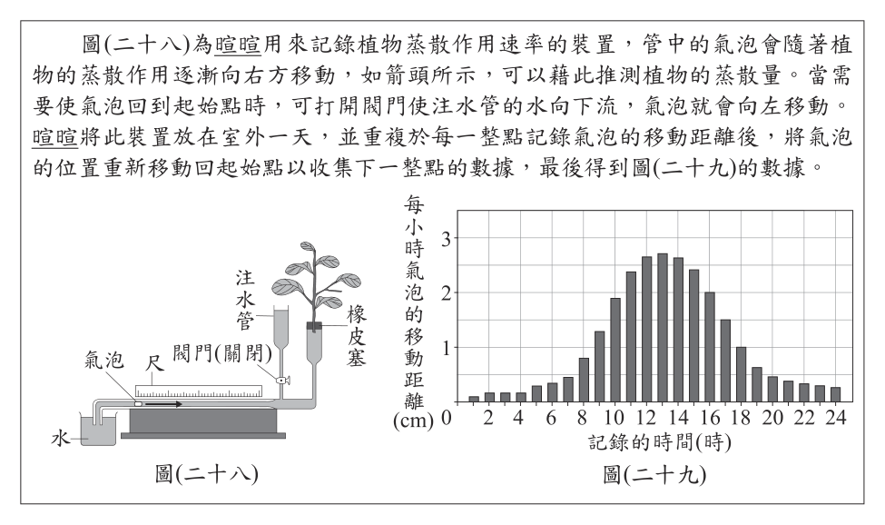
- （A）0～1時之間沒有發生蒸散作用
- （B）3～4時之間沒有發生蒸散作用
- （C）12～13時的平均蒸散速率為一天中最大值
- （D）6～7時的平均蒸散速率較7～8時的平均蒸散速率大
答案：（C）
詳解與考點
正解：題幹要比較圖中各時段的平均蒸散速率，關鍵是曲線在 12～13 時所對應的變化量最大；該時段的平均蒸散速率為一天中最大值，故 C 為正解。
A：0～1 時曲線數值不為 0，仍有蒸散作用；速率小不等於沒有蒸散。
B：3～4 時曲線數值不為 0，仍有蒸散作用，錯誤。
D：清晨蒸散速率隨日出上升，圖中 7～8 時的平均蒸散速率大於 6～7 時，敘述方向相反。
本題考點：曲線判讀——平均蒸散速率應比較相同時長內的數值變化量；蒸散有無——數值不為 0 即仍在蒸散，速率較小不能判為停止。
第 45 題
若依據暄暄的方式操作實驗，但將實驗裝置移至通風良好的乾燥室內放置兩天，則最不可能發生下列哪一種情況？
- （A）第一、二天記錄到的氣泡移動距離總和相近
- （B）在兩天的相同時段中，氣泡移動的距離相近
- （C）植物氣孔關閉減緩蒸散，使管中氣泡移動量很小
- （D）植物從氣孔吸收水分向下運輸，使管中氣泡向左移動
答案：（D）
詳解與考點
正解：題幹關鍵是通風、乾燥環境下的蒸散作用與植物水分運輸方向。植物水分由根吸收，經導管向上運輸，再由葉片氣孔散失；不會由氣孔吸水再向下運輸。因此「從氣孔吸收水分向下運輸，使氣泡向左移動」最不可能發生，D 為正解。
A：若兩日環境條件相近，第一、二天記錄到的氣泡移動距離總和可以相近。
B：兩天相同時段的溫度、濕度等條件相近時，氣泡移動距離可以相近。
C：乾燥環境下植物氣孔仍可能因調節而關閉，使蒸散減緩、氣泡移動量很小。
本題考點：蒸散作用——水由葉片氣孔散失，形成由根向上運輸的拉力；水分運輸方向——植物不由氣孔吸水向下運輸，須以根吸收、導管向上的方向判斷。
第 46 題
科學家想要觀察水滴以不同的速度，衝擊石英板時的變化情形，若不考慮空氣阻力，則他調整下列哪一項實驗條件最合理？
- （A）調整水滴的溫度，以改變水滴的密度
- （B）調整針頭的孔徑，以改變水滴的直徑與重量
- （C）調整針頭的高度，以改變水滴落下的垂直距離
- （D）調整攝影機的設定，以改變攝影機每秒拍攝畫面的張數
答案：（C）
詳解與考點
正解：題幹要改變水滴衝擊石英板的速度，且不考慮空氣阻力，所以選擇能直接改變自由落體高度的條件。v²＝2gh，g 固定時，針頭高度改變會使垂直落下距離 h 改變，因而改變撞擊速度 v，故 C 正確。
A：改變水滴溫度或密度不直接改變同一落下高度的自由落體速度。
B：改變針頭孔徑會改變水滴直徑與重量，但不直接控制撞擊速度。
D：調整攝影機每秒拍攝張數只改變記錄頻率，不改變水滴實際速度。
本題考點：自由落體——不計空氣阻力時 v²＝2gh；控制變因——欲改變撞擊速度，調整落下垂直距離 h，而非改變水滴大小或量測設備。
第 47 題
根據本文，已知石英板作用在水滴的力為F ′ ， F ′ 即 F 的反作用力，則圖(三十一)中呈現的四個狀態，哪一個狀態下F ′的大小最大？
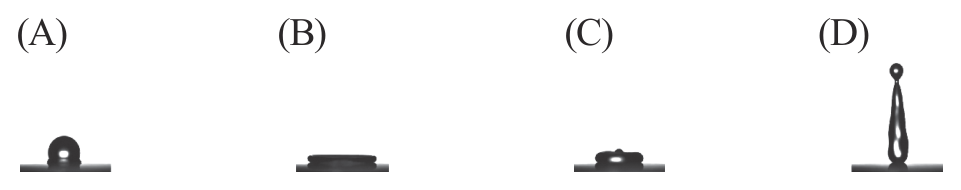
本題選項為上圖中的 A／B／C／D，請對照圖片作答。
答案：（A）
詳解與考點
正解：題幹指出F′是石英板作用在水滴上的力，也是F的反作用力，依牛頓第三定律兩力等大反向。比較圖（三十一）的四種接觸狀態，A的水滴接近半球、與板接觸面最小且最不被鋪平，依本文判讀其形變後反作用力最大，故A為正解。
B：水滴較被鋪平攤開，潤濕較佳，反作用力並非最大，錯誤。
C：水滴被鋪平攤開，並非反作用力最大的狀態，錯誤。
D：水滴被拉成細長形，也不是本文所示反作用力最大的狀態，錯誤。
本題考點：牛頓第三定律——兩物體交互作用力大小相等、方向相反；接觸狀態判讀——依圖比較水滴的鋪展與形變情形，再判定板對水滴作用力的大小。
第 48 題
組別一、四通入針筒內的兩種氣體，可依序使用下列何種反應來製備？
- （A）鹽酸和鎂帶反應、雙氧水分解反應
- （B）鹽酸和鎂帶反應、鹽酸和碳酸鈣反應
- （C）雙氧水分解反應、鹽酸和鎂帶反應
- （D）雙氧水分解反應、鹽酸和碳酸鈣反應
答案：（D）
詳解與考點
正解：題幹要依組別一、四所需氣體選製備反應。組別一通入氧氣，雙氧水分解可產生氧氣；組別四通入二氧化碳，鹽酸與碳酸鈣反應可產生二氧化碳。因此依序為「雙氧水分解反應、鹽酸和碳酸鈣反應」，D 為正解。
A：鹽酸和鎂帶反應產生氫氣，不是組別一所需的氧氣。
B：第一種反應仍產生氫氣，不能製備組別一所需的氧氣。
C：雙氧水分解可製備氧氣，但鹽酸和鎂帶產生氫氣，不能製備組別四所需的二氧化碳。
本題考點：氣體製備——雙氧水分解可製得氧氣，鹽酸與碳酸鈣反應可製得二氧化碳；反應判讀——先確認所需氣體，再對應能產生該氣體的反應物組合。
第 49 題
若忽略針筒內鐵粉所占去的體積，試判斷組別二針筒內的氧氣是否完全耗盡？
- （A）全耗盡，消耗氣體比例等於氧氣含量
- （B）全耗盡，消耗氣體比例已超過氧氣含量
- （C）未耗盡，消耗氣體比例高於氧氣含量的
- （D）未耗盡，消耗氣體比例接近氧氣含量的一半
答案：（D）
詳解與考點
正解：題幹要求以氣體體積縮減比例判斷氧氣是否耗盡；空氣中 O2 約占 21%，組別二僅消耗約 10%，接近氧氣含量的一半，小於 21%，表示氧氣未完全耗盡，故 D 為正解。
A：若氧氣全耗盡，消耗氣體比例應接近氧氣含量約 21%，不是約 10%。
B：氧氣全耗盡也不會使消耗比例超過空氣中氧氣的含量，錯誤。
C：實際消耗比例約 10%，低於而非高於氧氣含量 21%，錯誤。
本題考點：空氣成分——氧氣約占空氣體積的 21%；耗盡判斷——忽略鐵粉體積時，體積縮減接近 21% 才表示氧氣大致耗盡，約 10% 則約只消耗一半。
第 50 題
依據活性大小，判斷組別四針筒內的鐵粉理論上是否與氣體發生氧化還原反應？
- （A）因鐵的活性較小，故鐵粉不會被氧化
- （B）因鐵的活性較小，反應後鐵粉會被氧化
- （C）因鐵的活性較小，反應後氣體會被氧化
- （D）因鐵的活性較大，反應後鐵粉會被氧化
答案：（A）
詳解與考點
正解：組別四的氣體為二氧化碳。依元素活性大小，鐵的活性小於碳，因此鐵無法把二氧化碳中的碳還原成碳單質，也就不會在此反應中被二氧化碳氧化，故 A 為正解。
B：雖然同樣指出鐵的活性較小，卻誤判鐵粉仍會被氧化；鐵不能還原二氧化碳，理論上不發生此氧化還原反應。
C：若氣體被氧化，其所含元素的氧化數須升高；本題依活性判斷的結果是不發生反應，不能說二氧化碳被氧化。
D：把鐵與碳的活性大小顛倒；鐵的活性小於碳，無法由二氧化碳中置換出碳。
本題考點：活性判斷氧化還原反應——活性較大的元素才能把活性較小的元素從其化合物中置換出來；鐵的活性小於碳，因此不能還原 CO2。
其他年度
回到國中教育會考自然的年度總覽，
或到國中教育會考題庫首頁看其他科目。
題目與標準答案出自心測中心 會考歷屆試題（依著作權法 §9，考試試題不受著作權保護）。依中華民國《著作權法》第 9 條第 1 項第 5 款，
依法令舉行之各類考試試題不得為著作權之標的，得自由利用。詳解為 AI 整理的學習輔助，
並非官方標準答案；中華民國會修訂，引用前請對照現行版本查證。